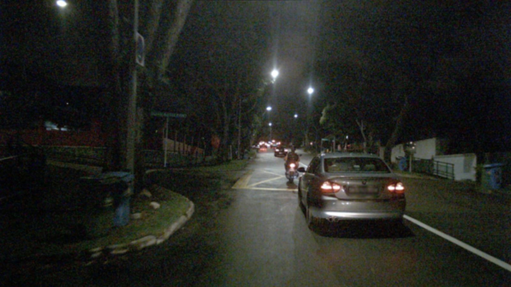

👀 Interactive Comparison
Drag for interactive comparison
Night Samples from nuScenes

Monocular depth estimation is a crucial task in computer vision. While existing methods have shown impressive results under standard conditions, they often face challenges in reliably performing in scenarios such as low-light or rainy conditions due to the absence of diverse training data. This paper introduces a novel approach named Stealing Stable Diffusion (SSD) prior for robust monocular depth estimation. The approach addresses this limitation by utilizing stable diffusion to generate synthetic images that mimic challenging conditions. Additionally, a self-training mechanism is introduced to enhance the model's depth estimation capability in such challenging environments. To enhance the utilization of the stable diffusion prior further, the DINOv2 encoder is integrated into the depth model architecture, enabling the model to leverage rich semantic priors and improve its scene understanding. Furthermore, a teacher loss is introduced to guide the student models in acquiring meaningful knowledge independently, thus reducing their dependency on the teacher models. The effectiveness of the approach is evaluated on nuScenes and Oxford RobotCar, two challenging public datasets, with the results showing the efficacy of the method.
Drag for interactive comparison
In this paper, we proposed the SSD, a novel approach aims at stealing stable diffusion prior for RMDE. SSD incorporates a new translation model called GDT, which is based on generative diffusion models. To adapt to GDT for RMDE, we integrate DINOv2 into our depth model's architecture, it helps to extract universal image features. Besides, we optimized the distillation loss used for knowledge distillation. Our approach is generalized and can be adapted to a variety of challenging conditions.
In this paper, we present a novel translation model called GDT (Generative Diffusion Model-based Translation). The objective of GDT is to generate a training sample Ig that closely resembles the day-clear image Id in terms of depth. To achieve this, we leverage the Stable Diffusion prior and introduce several control mechanisms to transform the day-clear image into challenging conditions while preserving specific characteristics.
In order to steal stable diffusion prior for robust depth estimation, we have made modifications to the architecture of Monodepth2. Additionally, we have employed a self-training strategy and introduced additional loss functions. The Student Net receives guidance from the Teacher Net, leveraging a stable diffusion prior. The semantic loss ensures semantic consistency, while the teacher loss enables the Student Net to learn beyond the capabilities of the Teacher Net.
Generative diffusion model-based translation results on nuScenes.
Self-supervised depth estimation results on nuScenes.
@article{mao2024stealing,
title={Stealing Stable Diffusion Prior for Robust Monocular Depth Estimation},
author={Mao, Yifan and Liu, Jian and Liu, Xianming},
journal={arXiv preprint arXiv:2403.05056},
year={2024}
}